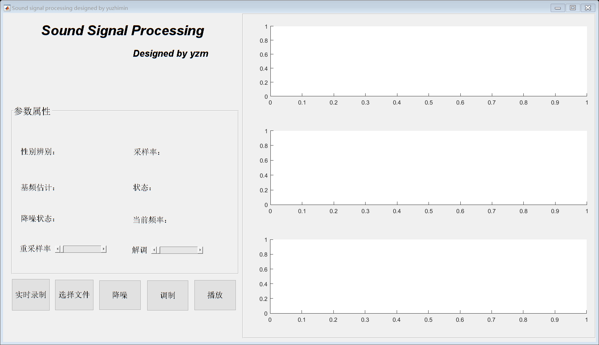

function varargout = Tree(varargin)
gui_Singleton = 1;
gui_State = struct('gui_Name', mfilename, ...
'gui_Singleton', gui_Singleton, ...
'gui_OpeningFcn', @Tree_OpeningFcn, ...
'gui_OutputFcn', @Tree_OutputFcn, ...
'gui_LayoutFcn', [] , ...
'gui_Callback', []);
if nargin && ischar(varargin{1})
gui_State.gui_Callback = str2func(varargin{1});
end
if nargout
[varargout{1:nargout}] = gui_mainfcn(gui_State, varargin{:});
else
gui_mainfcn(gui_State, varargin{:});
end
global flag flag1 flagy
flag =0;
flag1 =0;
flagy =0;
function Tree_OpeningFcn(hObject, eventdata, handles, varargin)
handles.output = hObject;
guidata(hObject, handles);
global AM_Fs
AM_Fs=0;
function varargout = Tree_OutputFcn(hObject, eventdata, handles)
varargout{1} = handles.output;
function luzhi_Callback(hObject, eventdata, handles)
global flag
flag = ~flag ;
if flag==0
set(handles.zhuantai,'string','状态：停止');
else
set(handles.zhuantai,'string','状态：工作');
end
luyingchuli(hObject, eventdata, handles);
function jiangzao_Callback(hObject, eventdata, handles)
[name, path1]= uigetfile('*.wav');
global path
path=strcat(path1,name);
function bianyin_Callback(hObject, eventdata, handles)
function luyingchuli(hObject, eventdata, handles)
global flag
while flag==1
recobj=audiorecorder;
recordblocking(recobj,3);
myRecording = getaudiodata(recobj);
if ~all(myRecording==0)
audio_fft=abs(fft(myRecording));
axes(handles.axes5);
Fs=8000;
time=(0:(length(myRecording)-1))/Fs;
plot(time,myRecording);
axis([0 3 -1 1]);
set(get(gca, 'YLabel'), 'String', '幅度');
t=title('时域波形');
t.FontSize=14;
[desicion,daopu,frequency]=VoiceProcess(myRecording,Fs,hObject,handles);
set(handles.xinbie,'string',strcat('性别：',desicion));
set(handles.sample,'string',strcat('采样率：',num2str(Fs)));
set(handles.jipin,'string',strcat('基频估计：',(num2str(frequency)),'Hz'));
axes(handles.axes6);
disp(size(audio_fft));
f=(0:(length(myRecording)-1))*Fs/length(myRecording);
plot(f(1:fix(length(myRecording)/2)),audio_fft(1:fix(length(myRecording)/2)));
t=title('频域对数功率谱');
t.FontSize=14;
set(get(gca, 'YLabel'), 'String', '功率/dB');
set(get(gca, 'XLabel'), 'String', '频率/Hz');
axes(handles.axes7);
plot(daopu(1:fix(size(daopu,1)/2),:));
t=title('倒谱');
t.FontSize=14;
set(get(gca, 'YLabel'), 'String', '功率');
set(get(gca, 'XLabel'), 'String', 'ms');
end
end
function playjiang_Callback(hObject, eventdata, handles)
global audio Fs
if ~isempty(audio) & Fs ~=0
disp('yes');
sound(audio,Fs);
end
function slider2_Callback(hObject, eventdata, handles)
global path Fs audio
disp(get(handles.slider2,'value'));
if ~isempty(path)
[y,fs]=audioread(path);
do(hObject, eventdata, handles,y,fs,1);
do(hObject, eventdata, handles,y,fs,2);
Fs = round(get(handles.slider2,'value')*fs);
if Fs<1000
Fs=1000
end
audio = resample(y,Fs,fs);
do(hObject, eventdata, handles,audio,Fs,3);
set(handles.sample,'string',strcat('采样率：',num2str(Fs)));
end
function slider2_CreateFcn(hObject, eventdata, handles)
if isequal(get(hObject,'BackgroundColor'), get(0,'defaultUicontrolBackgroundColor'))
set(hObject,'BackgroundColor',[.9 .9 .9]);
end
function jiangzhao1_Callback(hObject, eventdata, handles)
global path
set(handles.jiangzaoba,'string','降噪状态：开始');
global audio Fs
if ~isempty(path)
[audio ,Fs]=jiangzao(path,handles);
end
set(handles.jiangzaoba,'string','降噪状态：结束');
function dov(hObject, eventdata, handles,audio,Fs,number)
if number==1
t=(0:length(audio)-1)/Fs;
axes(handles.axes5);
plot(t,audio);
xlabel('T/s');
ylabel('幅度');
t=title('时域图');
t.FontSize=14;
elseif number==2
f=(0:length(audio)-1)/length(audio)*Fs;
axes(handles.axes6);
y_f=abs(fft(audio));
y_f=y_f/max(y_f);
plot(log(f(find(f<max(f)/2))),y_f(find(f<max(f)/2)));
xlabel('频率/Hz');
ylabel('幅度');
t=title('调幅信号频域图');
t.FontSize=14;
else
f=(0:length(audio)-1)/length(audio)*Fs;
axes(handles.axes7);
y_f=abs(fft(audio));
y_f=y_f/max(y_f);
plot(log(f(find(f<max(f)/2))),y_f(find(f<max(f)/2)));
xlabel('频率/Hz');
ylabel('幅度');
t=title('解调信号频域图');
t.FontSize=14;
end
function do(hObject, eventdata, handles,audio,Fs,number)
if number==1
t=(0:length(audio)-1)/Fs;
axes(handles.axes5);
plot(t,audio);
xlabel('T/s');
ylabel('幅度');
t=title('时域图');
t.FontSize=14;
elseif number==2
f=(0:length(audio)-1)/length(audio)*Fs;
axes(handles.axes6);
y_f=abs(fft(audio));
y_f=y_f/max(y_f);
plot(f(find(f<4000)),y_f(find(f<4000)));
xlabel('频率/Hz');
ylabel('幅度');
t=title('原信号频域图');
t.FontSize=14;
else
f=(0:length(audio)-1)/length(audio)*Fs;
axes(handles.axes7);
y_f=abs(fft(audio));
y_f=y_f/max(y_f);
plot(f(find(f<4000)),y_f(find(f<4000)));
xlabel('频率/Hz');
ylabel('幅度');
t=title('降采样后频域图');
t.FontSize=14;
end
function yupub_Callback(hObject, eventdata, handles)
global flagy
if flagy==0
flagy=1;
else
flagy=0;
end
function tiaozhi_Callback(hObject, eventdata, handles)
set(handles.zhuantai,'string','状态：调制开始');
[t,b]=tiaozhi();
global AM_signal AM_Fs
AM_signal=t;
AM_Fs=b;
disp(AM_Fs);
set(handles.zhuantai,'string','状态：调制结束');
dov(hObject, eventdata, handles,AM_signal,AM_Fs,1);
dov(hObject, eventdata, handles,AM_signal,AM_Fs,2);
function slider3_Callback(hObject, eventdata, handles)
clear sound
global AM_signal AM_Fs
disp(AM_Fs);
disp(size(AM_signal));
if ~ AM_Fs==0
fc = round(get(handles.slider3,'value')*200000);
set(handles.text12,'string',strcat(strcat('当前频率：',num2str(fc)),'Hz'));
t=(0:length(AM_signal)-1)/AM_Fs;
zaibo=cos(2*pi*fc*t);
st =zeros(length(AM_signal),1);
for b =1:length(AM_signal)
st(b)=AM_signal(b)*zaibo(b);
end
dov(hObject, eventdata, handles,st,AM_Fs,3);
fh = 10000;
fs=AM_Fs;
wp=fh/(fs/2);
N=128;
b=fir1(N,wp,'low');
signa4 = filtfilt(b,1,st);
signa41=resample(signa4,20000,fs);
sound(signa41,20000);
end
function slider3_CreateFcn(hObject, eventdata, handles)
if isequal(get(hObject,'BackgroundColor'), get(0,'defaultUicontrolBackgroundColor'))
set(hObject,'BackgroundColor',[.9 .9 .9]);
end
